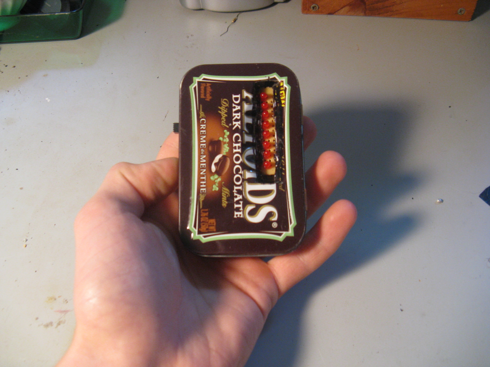
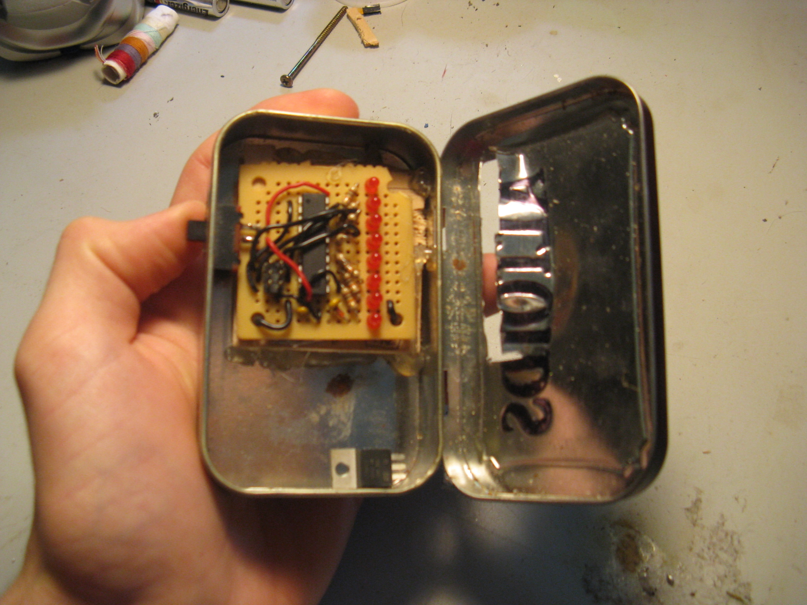
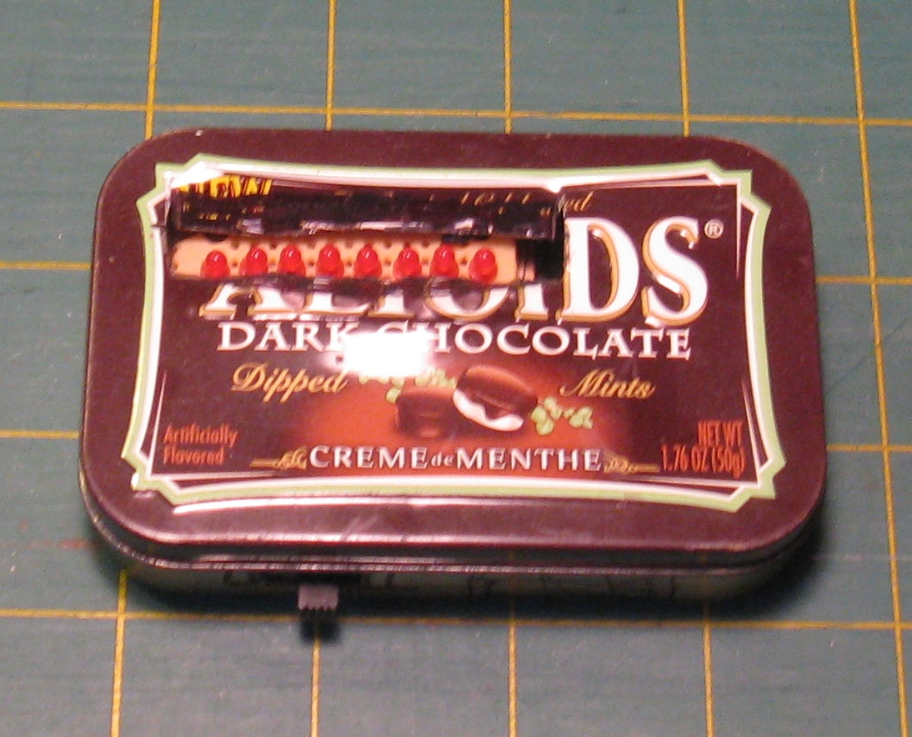

I made a simple POV display with an ATmega328P microcontroller to draw text and simple graphics by waving it in the air. I fit it into an Altoids tin for easy pocketability.


Made while in high school